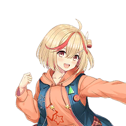

| 角色 | 对话/旁白 |
|---|---|
| 旁白 | 走进事务所时，不知为何室内回荡着海浪声。 并非汹涌的波涛，而是像南国度假村般惬意的浪涛声。 |
| 制作人 | （是有人在用音箱播放海浪声吗…？ 但到底是谁……？） |
| 旁白 | 循声望去，声音似乎来自隔板另一侧。 仔细一看还有人影。应该是我们事务所的某个偶像吧。 |
| 制作人 | 是谁在营造度假氛围啊— |
|  元木萌 | —啊。 |
| 旁白 | 拉开门的瞬间，她似乎正在更衣。 和正在脱衣服的萌四目相对了。 |
元木萌 | 呀啊啊啊啊啊！！制作人H——！！！ |
| 制作人 | 抱、抱歉！ |
| 旁白 | 我被萌的尖叫声弹开似的慌忙退离隔板。 多么老套的发展和对白啊…… 这么想着，我等待萌更衣完毕。 抱着难以言喻的烦闷等了一会儿，萌红着脸从隔板后走了出来。 顺带一提，海浪声仍在持续。 |
| 制作人 | 真的很对不起。 没想到你在换衣服…… |
元木萌 | 没、没事了！ 请不要道歉！ 被制作人看到我也不介意！ 反而挺开心的！大概！？ |
| 旁白 | 她是在努力打圆场吧。 若继续追问恐怕会辜负她的好意…… 这么想着，我只表示了理解：“这样啊……”。 |
| 制作人 | 话说… 你原本打算做什么？ |
元木萌 | 啊，是的！ 那个—最近我的工作不是增加了很多嘛！ |
| 旁白 | 确实，萌自身的努力有了回报， 她的日程逐渐充实起来。 |
| 制作人 | 是啊。 但这和播着海浪声换衣服有什么关系…… |
元木萌 | 就是说呢，我没时间去海边了……呜…… |
| 旁白 | 原来如此。相当直白易懂。 |
| 制作人 | 想要集中休假的话，说一声也不是不能调整日程…… |
元木萌 | 不要！ 我现在就想去，制作人！！ |
| 旁白 | 被萌的强烈诉求压倒。看来她相当想去。 |
元木萌 | 想去却没时间…！ 所以就想在事务所里体验海边的感觉啊！很合理对吧！ |
| 制作人 | （这算合理吗……） |
元木萌 | 为了烘托气氛，我准备在大屏幕放海滩影像、播海浪声， 接下来只要换上泳装就—…… |
元木萌 | 就在这个时候，制作人推门进来了... |
| 旁白 | 萌气鼓鼓地移开视线。 脸颊微红的样子，看来是想起刚才的事感到害羞了。 |
| 制作人 | …原、原来如此。 打扰你真抱歉。 |
| 旁白 | 虽然想说不该在事务所做这种事，但优先考虑萌的心情， 我先低头致歉。 |
元木萌 | 没事的，重头戏才刚要开始呢！ 而且就算没泳装也能享受大海哦！ |
| 旁白 | 说着，萌利落地支起准备好的海滩遮阳伞，甚至铺好了垫子。 |
元木萌 | 来吧制作人！ 一起坐下感受海洋氛围吧！！ |
| 制作人 | 不了，我还有工作…… |
元木萌 | 一会儿没关系的！ 总是忙个不停的制作人也需要转换心情呀！ |
| 旁白 | 反正工作也不算太忙，稍微陪陪她也行吧。 我在伞下挨着萌坐了下来。 大屏幕正如她所说播放着海滩影像，确实有种置身海水浴场的感觉。 |
元木萌 | 舒缓的浪涛声… 真棒啊，大海……超治愈— |
| 旁白 | ———萌的话语突然中断。 |
| 制作人 | 怎么了，萌？ |
元木萌 | 啊！果然比起被治愈，我更想去游泳！ 想尽情游上好几小时！ 在宽阔的沙滩一直奔跑也很棒！ |
| 旁白 | 对萌来说，总之就是想要动起来的样子。 这确实很符合她的性格。 |
| 制作人 | 在室内终究办不到吧…… |
元木萌 | 这点我还是明白的啦！ 所以我要充分享受这份氛围。和制作人一起！ |
| 制作人 | 好吧。那就稍微陪陪你。 |
元木萌 | 太好啦！谢谢你！ 就是这样，啊～大海真棒啊～。 |
| 旁白 | 萌半强迫地提高兴致，靠到我身上。 飘来女孩子特有的柔软甜香。 |
元木萌 | 和制作人一起听浪声的话，感觉什么烦恼都能忘记呢—…… |
| 旁白 | 萌眯着眼，将手臂缠上我的胳膊贴得更近。 发育丰盈的胸脯被用力挤压着变了形。 |
元木萌 | 哈—……大海—…… 白沙—……浪声—…… |
| 旁白 | 萌似乎没意识到自己正把胸部压在我身上。 她极其自然地像恋人般紧贴着。 这样下去对彼此都不妙…得克制些… 我试图在不被她察觉的情况下挪开身体。 |
元木萌 | 怎么了吗，制作人？ 总觉得您好像在一点点远离我…？ |
| 旁白 | 话音未落，萌立刻缩短距离。 发丝间飘来轻柔甜香，违背我的意志让全身燥热起来。 |
| 制作人 | 萌、萌…。 虽然难以启齿，那个…我们稍微分开点比较好… |
元木萌 | 诶？为什么— |
元木萌 | 啊………！！ |
| 制作人 | …萌？ |
| 旁白 | 萌突然张着嘴僵住了。 她的视线缓缓落向自己胸口。 |
元木萌 | 说起来现在的我…没穿胸罩！！ |
| 旁白 | 咦！？我不禁失声惊呼。 为什么会是这种状态…… |
元木萌 | 那个…我是想着万一有人进事务所， 就在衣服里先把胸罩脱掉，准备直接换上泳装的...... |
元木萌 | 结果脱胸罩时制作人正好闯进来… 那个，我也慌了神嘛…！ |
| 旁白 | 萌红着脸含糊地解释。 看来是刚才的突发事件让她忘了重新穿上胸罩。 |
| 制作人 | 这该说是… |
元木萌 | ....... |
| 旁白 | …我自己也有些动摇， 一时接不上话。 结果我和萌之间流淌着尴尬的沉默。 |
元木萌 | 呜——— |
| 制作人 | …啦？ |
元木萌 | 呜、呜哇啊啊啊！ 够了—！！我这就去换泳装！制作人！！ |
| 制作人 | 等、等等萌！ 别自暴自弃啊！ |
| 旁白 | 我抓住试图起身脱衣的萌的手腕拼命制止。 |
元木萌 | 不要！放开我制作人！ 我现在只能这么做了！不然羞耻到要死掉了！？ |
| 制作人 | 知道了！知道了！ 但你现在当场换更糟糕吧！！ |
元木萌 | 用更大的羞耻盖过现在的羞耻就没问题了！ 呜哦哦哦！！ |
| 制作人 | 这什么歪理！？ 总之至少去休息室换吧…！ 我心脏要受不了了！ |
| 旁白 | 看来我拼命的话总算奏效了， 萌一言不发地啪嗒啪嗒走向休息室。 刚松口气以为事态平息，却见她在门前停步， 回头定定凝视着我。 |
元木萌 | …其实如果是制作人的话… 给你看也不是不行哦。 |
| 旁白 | 萌低语般的话语让我迟了一拍才反应：“诶？”， 而萌已背对我离开房间。 在离开的瞬间，不知是不是错觉， 感觉萌的耳朵比今天任何时候都要红。 |